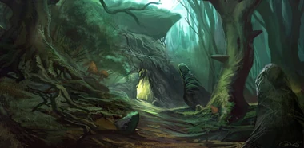
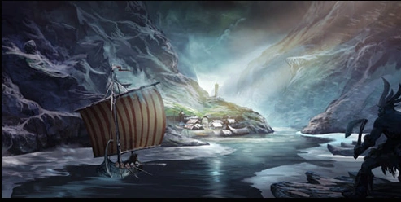

MAPAMUNDI

Un viaje por los alrededores de Kingshill lleva al caminante
a lugares
cuya historia yace perdida en las sombras del tiempo.
Sin embargo, si uno se aventura
demasiado en el interior de estas
sombras, descubrirá cosas que jamás pudo imaginar.
Estas salvajes cuevas relatan el nacimiento de la cultura humana y de sus dioses
olvidados.
Pueden encontrarse también las ruinas de antiguos lugares sagrados en
la Gruta del Aquelarre, en la que en la era del imperio se refugiaban los
expertos magos que no estaban dispuestos a someterse
al estricto código de los magos del círculo.


Más allá del Mar Oscuro se encuentra el pueblo de Jarlon, a orillas
de la mítica Costa del Trueno, llamada por los hombres del norte Torstrond.
Hace mucho tiempo, las ciudades de la costa de Duria vivían en constante temor a los
imponentes barcos-dragón que transportaban hasta allí guerreros con largas barbas, hasta que el entonces joven rey Harold
selló un pacto de paz eterna con el conde Jar, señor de las tierras del norte. 